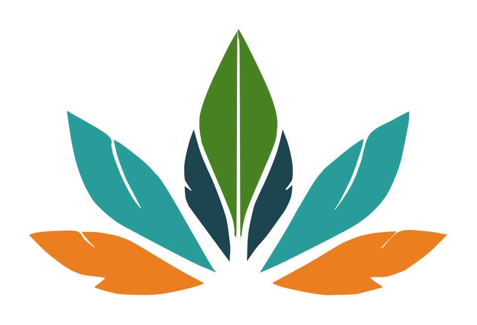

“Acolher, orientar e acompanhar socialmente pacientes e familiares.”
Gente da gente, do povo para o povo
Cannabis medicinal com cuidado popular, informação e acesso possível.
A APOCAM acolhe pacientes e famílias, orienta sobre os caminhos médicos e jurídicos e acompanha cada pessoa com responsabilidade social.
Comece do seu jeito. Você não precisa ter laudo ou saber qual caminho seguir para conversar com a APOCAM.
- Escuta sem julgamento
- Informação baseada em evidências
- Ética e legalidade

Você no centro do cuidadoEscuta, orientação e respeito ao seu tempo.
A imagem tem caráter ilustrativo.
Comece por aqui
Como podemos acolher você?
Escolha o caminho mais próximo do que você procura. A conversa começa com escuta, não com burocracia.
Quem somos
Saúde é direito.
Informação também.
“Promoção da saúde, da qualidade de vida e da justiça social, por meio do uso medicinal da cannabis.”Estatuto Social da APOCAM, Art. 4º
A APOCAM é uma associação civil sem fins lucrativos com sede em Brasília/DF. Sua atuação une cuidado popular, responsabilidade técnica e compromisso com os direitos humanos.
“Atuar na defesa de direitos e na formulação, execução e avaliação de políticas públicas.”
“Promover educação popular, formação técnica e conscientização social.”
Como funciona
Um caminho claro, construído com você.
O acolhimento é aberto a qualquer pessoa, sem exigência de laudo prévio ou de região específica.
-
01
Acolhimento inicial
Você conta o que procura, no seu tempo e sem julgamento. Pedimos apenas as informações necessárias para iniciar a conversa.
-
02
Orientação informativa
Explicamos, em linguagem acessível, os caminhos médicos e jurídicos relacionados à cannabis medicinal.
-
03
Encaminhamento referencial
Quando adequado, indicamos profissionais parceiros. Cada profissional atua com autonomia e responsabilidade próprias.
-
04
Acompanhamento social
Casos que precisam de apoio no acesso são avaliados individualmente, com atenção à realidade de cada pessoa e família.
Transparência é cuidado
O que a APOCAM faz hoje
- Acolhe, informa e acompanha socialmente.
- Orienta sobre caminhos de acesso.
- Realiza encaminhamentos de caráter referencial.
- Não presta serviços médicos.
- Não promete resultados terapêuticos ou decisões judiciais.
Nosso compromisso
Informar sem criminalizar.
Acolher sem julgar.
Orientar sem prometer.
Rede de cuidado
Profissionais que caminham conosco.
Os encaminhamentos são referenciais. Avaliação, prescrição, acompanhamento terapêutico e conduta jurídica são responsabilidades exclusivas dos profissionais.
Equipe médica
Saúde
Médica psiquiatra, CRM-SC 38.452
Dra. Desirée Danielle Guarnieri
Pesquisadora de cannabis medicinal com atuação nacional e internacional e formação complementar na área.
Conhecer atuação
Certificada pela WeCann, USP e KayaMind, Espanha, e membro da IACM. Atua em temas como fibromialgia, dores crônicas, dores neuropáticas e autismo.
Jurídico interno
Direito
Advogado, OAB/DF 82.264
Henrique César Ramiro de Sousa
Orienta sobre direitos, documentos e caminhos legais de acesso à cannabis medicinal.
Conhecer atuação
Pós-graduado em Direito Tributário e com MBA em andamento em Controladoria, Estratégia Financeira e Fiscal pela PUCRS.
Direito
Advogado, OAB/DF 69.237
Eduardo Augusto da Silva Lopes
Integra a equipe jurídica da associação, com orientação educativa e transparente.
Conhecer atuação
Graduado em Direito pelo IESB em 2020. Atua na orientação sobre documentos, direitos e possibilidades legais.
Jurídico externo
Direito e saúde
Advogada, Direito e Saúde
Dra. Tais Correa
Atua há mais de oito anos na área da saúde, com abordagem técnica, sensível e estratégica.
Conhecer atuação
Formada pela Universidade Presbiteriana Mackenzie, trabalha com causas complexas e humanizadas relacionadas à saúde.
A APOCAM não garante resultados terapêuticos, decisões judiciais ou concessão de habeas corpus.
Perguntas frequentes
Informação clara também acolhe.
Reunimos respostas diretas para as dúvidas mais comuns. Se ainda precisar de orientação, fale com a nossa equipe.
Ir para o acolhimentoO que é a APOCAM?
A APOCAM é uma associação civil sem fins lucrativos, com sede em Brasília/DF. Nesta fase, atua no campo social, informativo e de orientação, acolhendo pacientes e famílias e oferecendo encaminhamento referencial.
Preciso ter laudo prévio?
Não. O acolhimento é aberto a qualquer pessoa, sem exigência de laudo prévio ou de região específica.
O acolhimento tem algum custo?
A escuta inicial da APOCAM não exige pagamento. Custos relacionados a atendimentos profissionais e eventual isenção são avaliados caso a caso, com respeito e sem constrangimento.
Como funciona o encaminhamento médico?
Quando adequado, a APOCAM indica profissionais de forma referencial. A avaliação, a prescrição e o acompanhamento terapêutico são responsabilidades exclusivas do profissional de saúde.
Como funciona a orientação jurídica?
Profissionais parceiros podem orientar sobre direitos, documentos e possibilidades legais. Nenhuma decisão judicial ou concessão de habeas corpus é garantida.
Há garantia de resultado terapêutico?
Não. As evidências e os resultados variam conforme a condição e cada pessoa. O acompanhamento de um profissional habilitado é essencial.
Faça parte
Uma associação popular é feita por muitas mãos.
Existem diferentes formas de fortalecer o acolhimento, a educação popular e a defesa do direito à saúde.
Contribua
Apoie a estrutura social que torna o acolhimento e a orientação possíveis.
Seja voluntário
Compartilhe tempo, conhecimento e experiência para ampliar a rede de cuidado.
Some como profissional
Profissionais de saúde, direito, serviço social e outras áreas são bem-vindos.
Para participar de qualquer uma dessas formas, fale com a gente.
Acolhimento
A porta está aberta.
Conte o que você procura. Vamos ler sua mensagem com atenção, respeito e sem julgamento.
WhatsApp da APOCAM
(61) 99512-7355
E-mail
contato@apocam.ong.br
Sede
SCES Trecho 2, Lote 32, Pier 21, Loja R60C
Asa Sul, Brasília/DF, CEP 70.200-002
Asa Sul, Brasília/DF, CEP 70.200-002
Primeiro contato
Como podemos ajudar?
Pedimos apenas os dados necessários para que a equipe retorne o contato.
Onde estamos
Brasília, Distrito Federal
Atendimento e acolhimento mediante contato prévio.